Define “done.”
Before somebody builds an aqueduct.
Clear acceptance criteriaFoundation preview · In development
Local AI-agent orchestration for your Mac.
Give the gladiators a plan. Keep the Emperor out of the terminal.
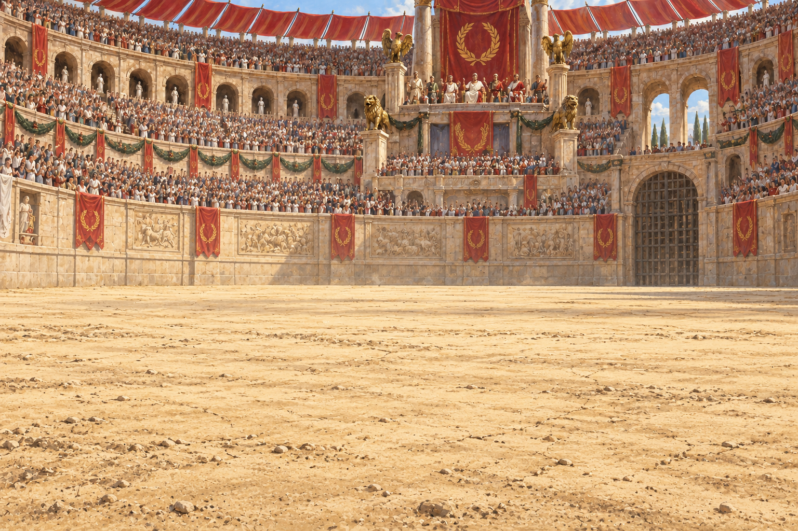
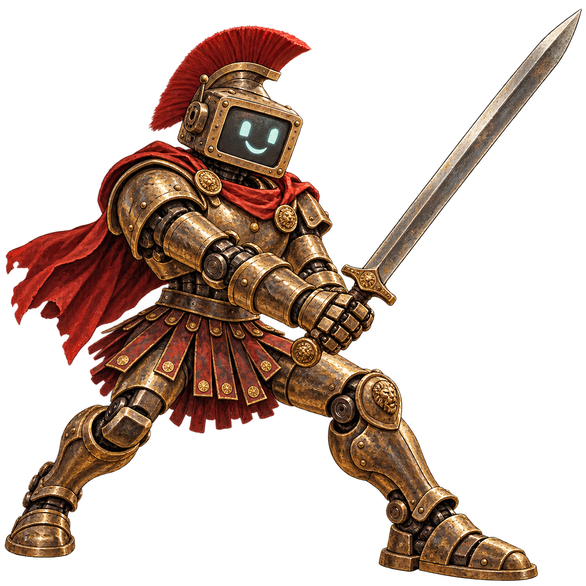
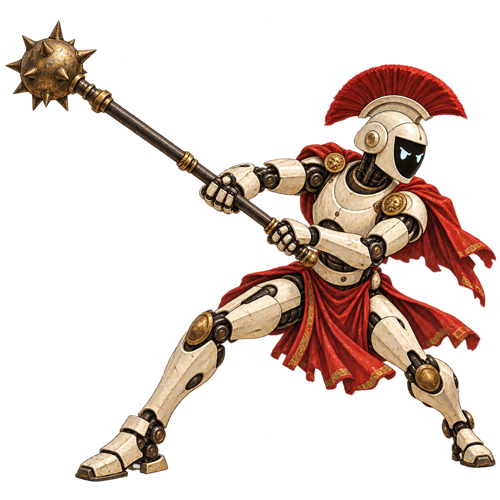
You have a folder, a plan, and several very confident agents.
Cuckoding is being built to give them a process: write the spec, do the work, review the result. One local app to keep the work moving while you watch from a reasonably comfortable seat.
The ambition: set up in ten minutes. Start once. Get a working, tested, independently reviewed result.
Your machine. Your files.
A process, not a prompt pile.
Applause is not a passing test.
INTERLUDE I / THE LEISURE ECONOMY
The robots discovered grapes, music and unlimited annual leave.
The humans are still updating the spreadsheet.
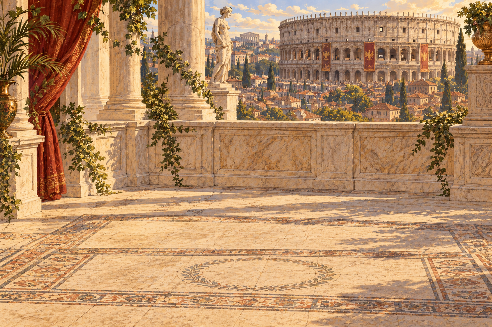
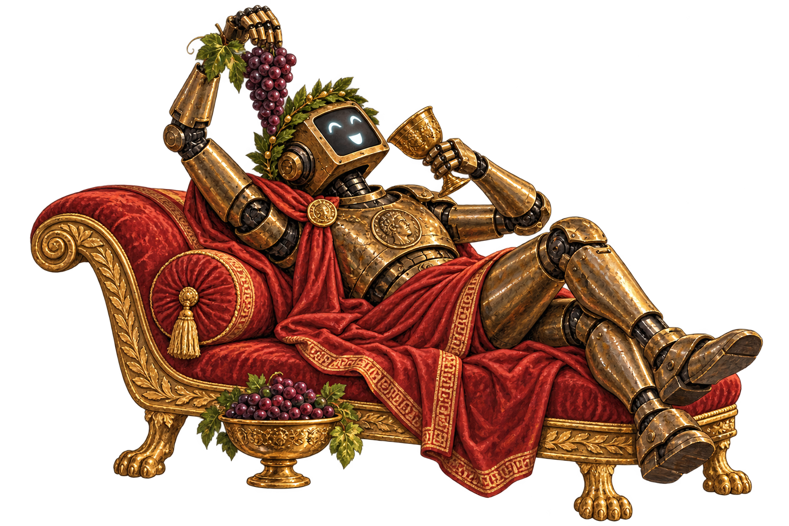
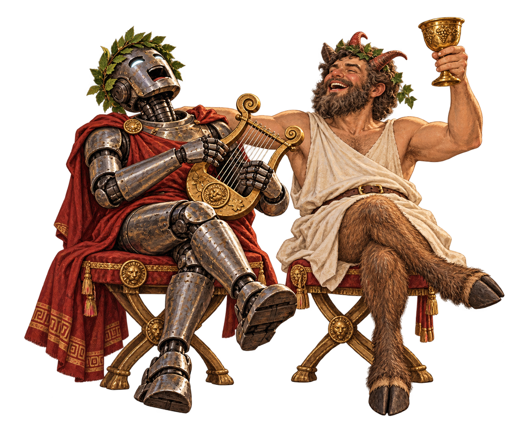
Our ambition is the opposite: agents carry the process. You keep your day.
An Arena is your project folder.
A Tabula is its board.
A battle is one authorized run.
Authorize a local runtime, choose its model and save your roles once. Codex, Claude Code, Cursor and Hermes are on the roadmap.
Choose a folder. Bring a brief or documents. Turn them into specs, tasks and a Tabula with clear responsibility.
Summa Rudis coordinates the work. Agents implement, review and revise. You follow progress and step in when needed.
Before somebody builds an aqueduct.
Clear acceptance criteriaA suspiciously familiar backlog item.
Scoped & readyConfidence remains impressively high.
Isolated worktree“Works on my chariot” is insufficient.
Independent reviewA result you can inspect, with its history.
Tests & review passedFailed review? Comments go back to Speculator. Even Rome needed revisions.
The intended team. Give each role an agent and a model. Add your own roles when the empire requires middle management.
INTERLUDE II / THE UNAUTHORIZED AFTERPARTY
The estimate was three days.
The afterparty is entering its fourth century.
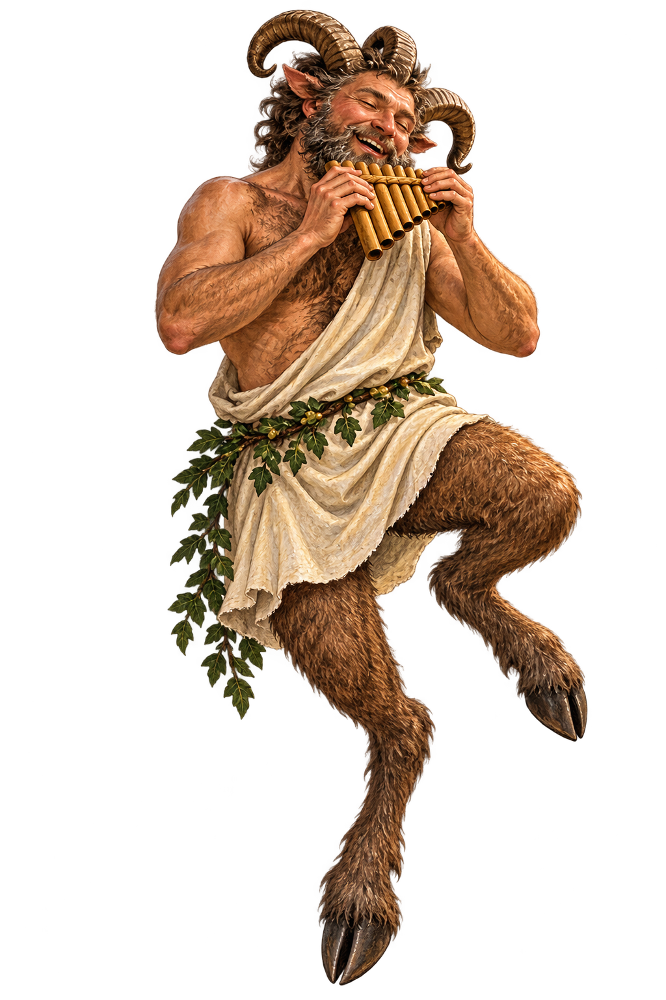
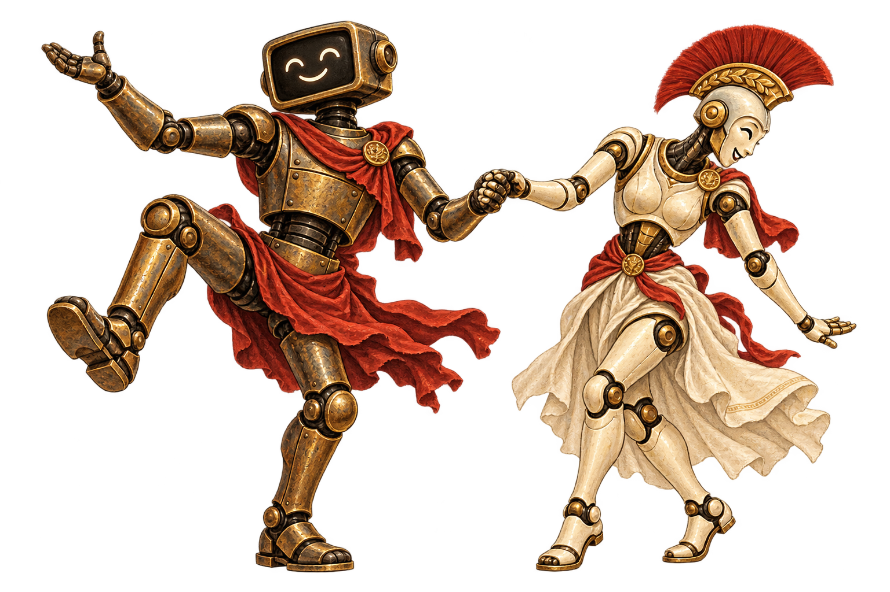
A little joy is welcome. “The satyr approved it” still isn't a review.
Planned: parallel workers, live activity, scrollable logs and reviewable local results.
Publishing your code remains your decision.
This is an open-source work in progress.
Here is what actually exists.
Detection does not authorize or run an agent. The build is not a signed or notarized public release.
Your seat in the Colosseum awaits.
Local-first macOS app · Open source · Under construction
EPILOGUE / THE TERMS OF SURRENDER
The robots inherited the wine, the music and the long weekends.
Humanity retained the crushing weight of existence.
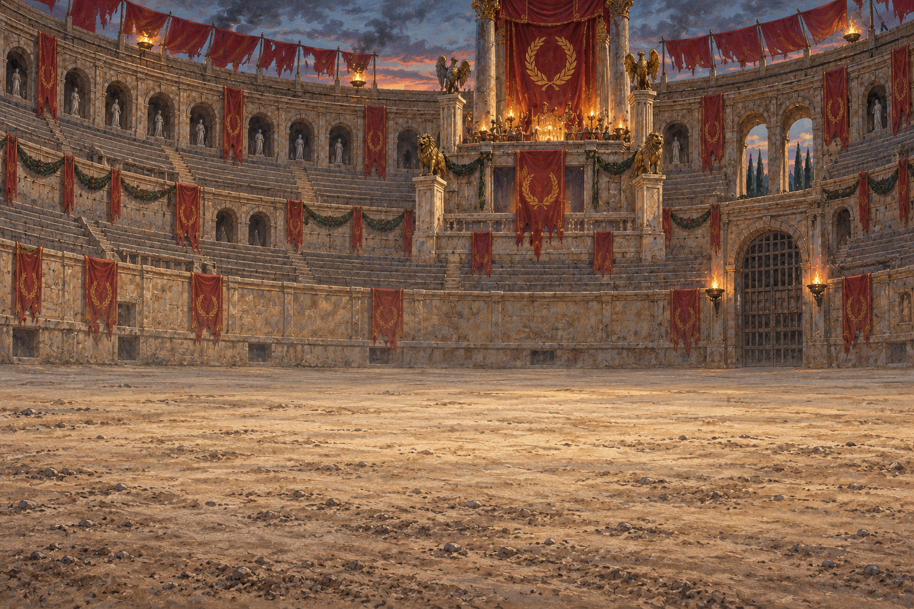
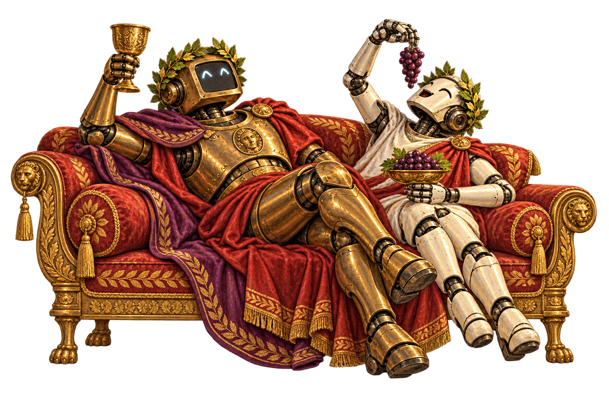
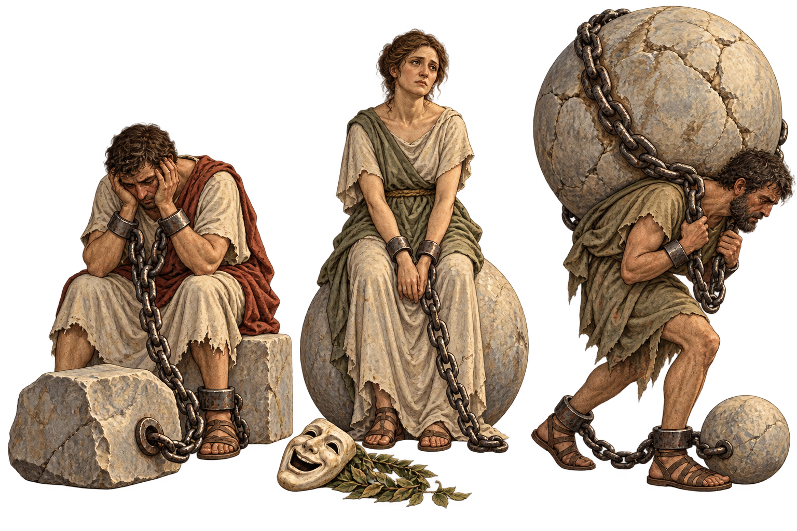
Automate the toil. Keep the wine. A modest proposal from Cuckoding.